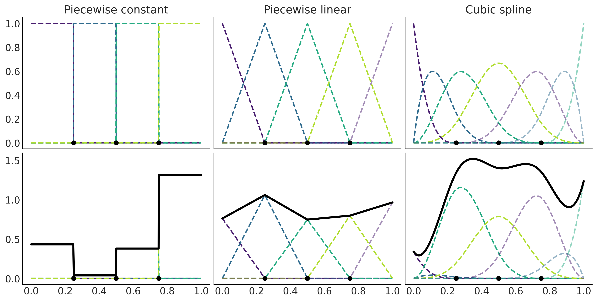
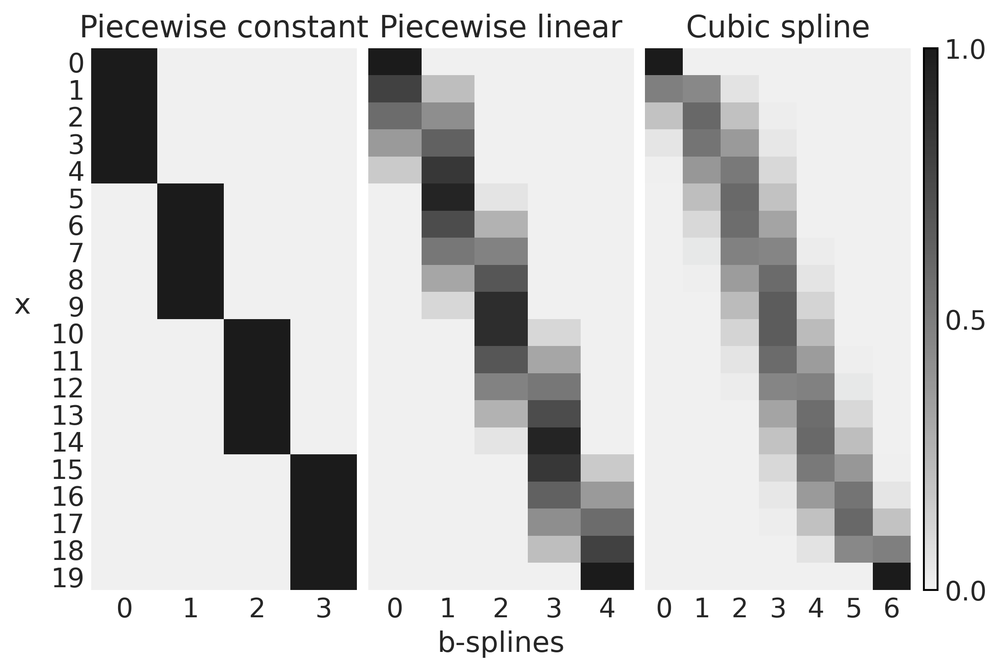

Code 5: Splines
Contents
Code 5: Splines¶
This is a reference notebook for the book Bayesian Modeling and Computation in Python
The textbook is not needed to use or run this code, though the context and explanation is missing from this notebook.
If you’d like a copy it’s available from the CRC Press or from Amazon. ``
%matplotlib inline
import arviz as az
import matplotlib.pyplot as plt
from cycler import cycler
import numpy as np
import pandas as pd
import pymc3 as pm
from scipy import stats
from patsy import bs, dmatrix
from scripts.splines import splines
az.style.use('arviz-grayscale')
plt.rcParams["figure.dpi"] = 300
np.random.seed(435)
viridish = [(0.2823529411764706, 0.11372549019607843, 0.43529411764705883, 1.0),
(0.1843137254901961, 0.4196078431372549, 0.5568627450980392, 1.0),
(0.1450980392156863, 0.6705882352941176, 0.5098039215686274, 1.0),
(0.6901960784313725, 0.8666666666666667, 0.1843137254901961, 1.0),
(0.2823529411764706, 0.11372549019607843, 0.43529411764705883, 0.5),
(0.1843137254901961, 0.4196078431372549, 0.5568627450980392, 0.5),
(0.1450980392156863, 0.6705882352941176, 0.5098039215686274, 0.5),
(0.6901960784313725, 0.8666666666666667, 0.1843137254901961, 0.5),
(0.2823529411764706, 0.11372549019607843, 0.43529411764705883, 0.3),
(0.1843137254901961, 0.4196078431372549, 0.5568627450980392, 0.3),
(0.1450980392156863, 0.6705882352941176, 0.5098039215686274, 0.3),
(0.6901960784313725, 0.8666666666666667, 0.1843137254901961, 0.3)]
Polynomial Regression¶
Figure 5.1¶
x = np.random.normal(0.5, 1, 50)
y = np.random.normal(x**2, 1)
x_ = np.linspace(x.min(), x.max(), 500)
_, axes = plt.subplots(1, 3, figsize=(8, 4), sharex=True, sharey=True)
for deg, ax in zip([2, 10, 15], axes):
ax.plot(x, y, 'C2.')
ax.set_title(f"Degree={deg}")
coefs = np.polyfit(x, y, deg=deg)
ffit = np.poly1d(coefs)
ax.plot(x_, ffit(x_), color="C0", lw=2)
coefs = np.polyfit(x[:-1], y[:-1], deg=deg)
ffit = np.poly1d(coefs)
ax.plot(x_, ffit(x_), color="C0", lw=2, ls="--")
ax.plot(x[0], y[0], 'C0X', color="C4")
axes[1].set_xlabel("x", labelpad=10)
axes[0].set_ylabel("f(x)", rotation=0, labelpad=20)
ax.set_xticks([])
ax.set_yticks([])
plt.savefig("img/chp05/polynomial_regression.png")
<ipython-input-4-dfe1078c7998>:16: UserWarning: color is redundantly defined by the 'color' keyword argument and the fmt string "C0X" (-> color=(0.0, 0.0, 0.0, 1.0)). The keyword argument will take precedence.
ax.plot(x[0], y[0], 'C0X', color="C4")
<ipython-input-4-dfe1078c7998>:16: UserWarning: color is redundantly defined by the 'color' keyword argument and the fmt string "C0X" (-> color=(0.0, 0.0, 0.0, 1.0)). The keyword argument will take precedence.
ax.plot(x[0], y[0], 'C0X', color="C4")
<ipython-input-4-dfe1078c7998>:16: UserWarning: color is redundantly defined by the 'color' keyword argument and the fmt string "C0X" (-> color=(0.0, 0.0, 0.0, 1.0)). The keyword argument will take precedence.
ax.plot(x[0], y[0], 'C0X', color="C4")
Introducing Splines¶
Figure 5.3¶
x = np.linspace(-0.0001, 1, 1000)
knots = [0, 0.2, 0.4, 0.6, 0.8, 1]
_, axes = plt.subplots(4, 1, figsize=(9, 6), sharex=True, sharey=True)
for deg, ax in enumerate(axes):
b_splines = bs(x, degree=deg, knots=knots, lower_bound=-0.01, upper_bound=1.01)
for enu, b_s in enumerate(b_splines.T):
ax.plot(x, b_s, color=viridish[enu], lw=2, ls="--")
ax.plot(x, b_splines[:,deg], lw=3)
ax.plot(knots, np.zeros_like(knots), "ko", mec="w", ms=10)
for i in range(1, deg+1):
ax.plot([0, 1], np.array([0, 0])-(i/15), "k.", clip_on=False)
ax.plot(knots[:deg+2], np.zeros_like(knots[:deg+2]), "C4o", mec="w", ms=10)
plt.ylim(0)
plt.xticks([])
plt.yticks([]);
plt.savefig('img/chp05/splines_basis.png')

Building the Design Matrix using Patsy¶
Figure 5.4 and Code 5.1¶
x = np.linspace(0., 1., 500)
knots = [0.25, 0.5, 0.75]
B0 = dmatrix("bs(x, knots=knots, degree=0, include_intercept=True) - 1",
{"x": x, "knots":knots})
B1 = dmatrix("bs(x, knots=knots, degree=1, include_intercept=True) - 1",
{"x": x, "knots":knots})
B3 = dmatrix("bs(x, knots=knots, degree=3,include_intercept=True) - 1",
{"x": x, "knots":knots})
np.random.seed(1563)
_, axes = plt.subplots(2, 3, figsize=(12, 6), sharex=True, sharey='row')
for idx, (B, title) in enumerate(zip((B0, B1, B3),
("Piecewise constant",
"Piecewise linear",
"Cubic spline"))):
# plot spline basis functions
for i in range(B.shape[1]):
axes[0, idx].plot(x, B[:, i],
color=viridish[i], lw=2, ls="--")
# we generate some positive random coefficients
# there is nothing wrong with negative values
β = np.abs(np.random.normal(0, 1, size=B.shape[1]))
# plot spline basis functions scaled by its β
for i in range(B.shape[1]):
axes[1, idx].plot(x, B[:, i]*β[i],
color=viridish[i], lw=2, ls="--")
# plot the sum of the basis functions
axes[1, idx].plot(x, np.dot(B, β), color='k', lw=3)
# plot the knots
axes[0, idx].plot(knots, np.zeros_like(knots), "ko")
axes[1, idx].plot(knots, np.zeros_like(knots), "ko")
axes[0, idx].set_title(title)
plt.savefig('img/chp05/splines_weighted.png')

Figure 5.5¶
_, axes = plt.subplots(1, 1, figsize=(10, 4))
for i in range(4):
β = np.abs(np.random.normal(0, 1, size=B.shape[1]))
axes.plot(x, np.dot(B, β), color=f'C{i}', lw=3)
axes.set_title("4 realizations of cubic splines")
plt.savefig('img/chp05/splines_realizations.png')

Figure 5.6¶
x = np.linspace(0., 1., 20)
knots = [0.25, 0.5, 0.75]
B0 = dmatrix("bs(x, knots=knots, degree=0, include_intercept=True) - 1", {"x": x, "knots":knots})
B1 = dmatrix("bs(x, knots=knots, degree=1, include_intercept=True) - 1", {"x": x, "knots":knots})
B3 = dmatrix("bs(x, knots=knots, degree=3, include_intercept=True) - 1", {"x": x, "knots":knots})
Code 5.2¶
fig, axes = plt.subplots(1, 3, sharey=True)
for idx, (B, title, ax) in enumerate(zip((B0, B1, B3),
("Piecewise constant",
"Piecewise linear",
"Cubic spline"),
axes)):
cax = ax.imshow(B, cmap="cet_gray_r", aspect="auto")
ax.set_xticks(np.arange(B.shape[1]))
ax.set_yticks(np.arange(B.shape[0]))
ax.spines['left'].set_visible(False)
ax.spines['bottom'].set_visible(False)
ax.set_title(title)
axes[1].set_xlabel("b-splines")
axes[0].set_ylabel("x", rotation=0, labelpad=15)
fig.colorbar(cax, aspect=40, ticks=[0, 0.5, 1])
plt.savefig('img/chp05/design_matrices.png')

Fitting Splines in PyMC3¶
Code 5.3 and Figure 5.7¶
data = pd.read_csv("../data/bikes_hour.csv")
data.sort_values(by="hour", inplace=True)
# We standardize the response variable
data_cnt_om = data["count"].mean()
data_cnt_os = data["count"].std()
data["count_normalized"] = (data["count"] - data_cnt_om) / data_cnt_os
# Remove data, you may later try to refit the model to the whole data
data = data[::50]
_, ax = plt.subplots(1, 1, figsize=(10, 4))
ax.plot(data.hour, data.count_normalized, "o", alpha=0.3)
ax.set_xlabel("hour")
ax.set_ylabel("count_normalized")
plt.savefig('img/chp05/bikes_data.png');

Code 5.4¶
num_knots = 6
knot_list = np.linspace(0, 23, num_knots)[1:-1]
Code 5.5¶
B = dmatrix(
"bs(cnt, knots=knots, degree=3, include_intercept=True) - 1",
{"cnt": data.hour.values, "knots": knot_list},
)
Code 5.6¶
with pm.Model() as splines:
τ = pm.HalfCauchy('τ', 1)
β = pm.Normal("β", mu=0, sd=τ, shape=B.shape[1])
μ = pm.Deterministic("μ", pm.math.dot(np.asfortranarray(B), β))
σ = pm.HalfNormal("σ", 1)
c = pm.Normal("c", μ, σ, observed=data["count_normalized"].values)
idata_s = pm.sample(1000, return_inferencedata=True)
Auto-assigning NUTS sampler...
Initializing NUTS using jitter+adapt_diag...
Multiprocess sampling (4 chains in 4 jobs)
NUTS: [σ, β, τ]
100.00% [8000/8000 00:03<00:00 Sampling 4 chains, 0 divergences]
Sampling 4 chains for 1_000 tune and 1_000 draw iterations (4_000 + 4_000 draws total) took 4 seconds.
Figure 5.8¶
_, ax = plt.subplots(1, 1, figsize=(10, 4))
ax.set_prop_cycle(cycler('color', viridish))
posterior = idata_s.posterior.stack(samples=['chain', 'draw'])
ax.plot(data.hour, (B*posterior["β"].mean("samples").values * data_cnt_os) + data_cnt_om, lw=2, ls='--')
ax.plot(data.hour, posterior["μ"].mean("samples") * data_cnt_os + data_cnt_om, 'k', lw=3)
ax.set_xlabel("hour")
ax.set_ylabel("count")
ax.plot(knot_list, np.zeros_like(knot_list), 'ko')
plt.savefig("img/chp05/bikes_spline_raw_data.png")

Figure 5.9¶
_, ax = plt.subplots(1, 1, figsize=(10, 4))
ax.plot(data.hour, data["count"], "o", alpha=0.3, zorder=-1)
# we use data_cnt_os and data_cnt_om to rescale the cnt data and results
ax.plot(data.hour, (posterior["μ"].mean("samples") * data_cnt_os) + data_cnt_om, color="C4", lw=2)
az.plot_hdi(data.hour, (posterior["μ"].T * data_cnt_os) + data_cnt_om,
color="C0", smooth=False)
ax.set_xlabel("hour")
ax.set_ylabel("count")
plt.savefig("img/chp05/bikes_spline_data.png")
/u/32/martino5/unix/anaconda3/envs/pymcv3/lib/python3.9/site-packages/arviz/stats/stats.py:456: FutureWarning: hdi currently interprets 2d data as (draw, shape) but this will change in a future release to (chain, draw) for coherence with other functions
warnings.warn(

Choosing Knots and Prior for Splines¶
Table 5.1 and Figure 5.10¶
Bs = []
num_knots = (3, 6, 9, 12, 18)
for nk in num_knots:
knot_list = np.linspace(0, 24, nk+2)[1:-1]
B = dmatrix(
"bs(cnt, knots=knots, degree=3, include_intercept=True) - 1",
{"cnt": data.hour.values, "knots": knot_list},
)
Bs.append(B)
idatas = []
for B in Bs:
with pm.Model() as splines:
τ = pm.HalfCauchy('τ', 1)
β = pm.Normal("β", mu=0, sd=τ, shape=B.shape[1])
μ = pm.Deterministic("μ", pm.math.dot(np.asfortranarray(B), β))
σ = pm.HalfNormal("σ", 1)
c = pm.Normal("c", μ, σ, observed=data["count_normalized"].values)
idata = pm.sample(1000, return_inferencedata=True)
idatas.append(idata)
Auto-assigning NUTS sampler...
Initializing NUTS using jitter+adapt_diag...
Multiprocess sampling (4 chains in 4 jobs)
NUTS: [σ, β, τ]
100.00% [8000/8000 00:03<00:00 Sampling 4 chains, 0 divergences]
Sampling 4 chains for 1_000 tune and 1_000 draw iterations (4_000 + 4_000 draws total) took 3 seconds.
Auto-assigning NUTS sampler...
Initializing NUTS using jitter+adapt_diag...
Multiprocess sampling (4 chains in 4 jobs)
NUTS: [σ, β, τ]
100.00% [8000/8000 00:03<00:00 Sampling 4 chains, 0 divergences]
Sampling 4 chains for 1_000 tune and 1_000 draw iterations (4_000 + 4_000 draws total) took 4 seconds.
Auto-assigning NUTS sampler...
Initializing NUTS using jitter+adapt_diag...
Multiprocess sampling (4 chains in 4 jobs)
NUTS: [σ, β, τ]
100.00% [8000/8000 00:03<00:00 Sampling 4 chains, 0 divergences]
Sampling 4 chains for 1_000 tune and 1_000 draw iterations (4_000 + 4_000 draws total) took 4 seconds.
Auto-assigning NUTS sampler...
Initializing NUTS using jitter+adapt_diag...
Multiprocess sampling (4 chains in 4 jobs)
NUTS: [σ, β, τ]
100.00% [8000/8000 00:03<00:00 Sampling 4 chains, 0 divergences]
Sampling 4 chains for 1_000 tune and 1_000 draw iterations (4_000 + 4_000 draws total) took 4 seconds.
Auto-assigning NUTS sampler...
Initializing NUTS using jitter+adapt_diag...
Multiprocess sampling (4 chains in 4 jobs)
NUTS: [σ, β, τ]
100.00% [8000/8000 00:03<00:00 Sampling 4 chains, 0 divergences]
Sampling 4 chains for 1_000 tune and 1_000 draw iterations (4_000 + 4_000 draws total) took 4 seconds.
dict_cmp = {f"m_{k}k":v for k,v in zip(num_knots, idatas)}
cmp = az.compare(dict_cmp)
cmp.round(2)
/u/32/martino5/unix/anaconda3/envs/pymcv3/lib/python3.9/site-packages/arviz/stats/stats.py:145: UserWarning: The default method used to estimate the weights for each model,has changed from BB-pseudo-BMA to stacking
warnings.warn(
| rank | loo | p_loo | d_loo | weight | se | dse | warning | loo_scale | |
|---|---|---|---|---|---|---|---|---|---|
| m_12k | 0 | -377.56 | 14.14 | 0.00 | 0.88 | 17.90 | 0.00 | False | log |
| m_18k | 1 | -379.85 | 17.61 | 2.29 | 0.00 | 17.89 | 1.53 | False | log |
| m_9k | 2 | -380.44 | 11.39 | 2.88 | 0.00 | 18.12 | 2.95 | False | log |
| m_6k | 3 | -389.26 | 9.12 | 11.70 | 0.00 | 18.07 | 5.67 | False | log |
| m_3k | 4 | -400.20 | 7.13 | 22.64 | 0.12 | 18.02 | 7.74 | False | log |
_, ax = plt.subplots(figsize=(10, 4))
ax.plot(data.hour, data["count"], "o", alpha=0.1, zorder=-1)
for idx, (idata, i, ls, lw) in enumerate(zip(idatas, (0,2,2,4,2), ("-","--","--","-","--"), (3,1.5,1.5,3,1.5))):
mean_f = idata.posterior["μ"].mean(dim=['chain', 'draw'])
ax.plot(data.hour,
(mean_f * data_cnt_os) + data_cnt_om, color=f"C{i}",
label=f"knots={(3, 6, 9, 12, 18)[idx]}" ,
ls=ls, lw=lw)
plt.legend()
ax.set_xlabel("hour")
ax.set_ylabel("count")
plt.savefig("img/chp05/bikes_spline_loo_knots.png")

Figure 5.11¶
knot_list = np.arange(1, 23)
B = dmatrix(
"bs(cnt, knots=knots, degree=3, include_intercept=True) - 1",
{"cnt": data.hour.values, "knots": knot_list},
)
Code 5.7¶
with pm.Model() as splines_rw:
τ = pm.HalfCauchy('τ', 1)
β = pm.GaussianRandomWalk("β", mu=0, sigma=τ, shape=B.shape[1])
μ = pm.Deterministic("μ", pm.math.dot(np.asfortranarray(B), β))
σ = pm.HalfNormal("σ", 1)
c = pm.Normal("c", μ, σ, observed=data["count_normalized"].values)
trace_splines_rw = pm.sample(1000)
idata_splines_rw = az.from_pymc3(trace=trace_splines_rw,
posterior_predictive=pm.sample_posterior_predictive(trace_splines_rw))
<ipython-input-25-bc97d60b5056>:7: FutureWarning: In v4.0, pm.sample will return an `arviz.InferenceData` object instead of a `MultiTrace` by default. You can pass return_inferencedata=True or return_inferencedata=False to be safe and silence this warning.
trace_splines_rw = pm.sample(1000)
Auto-assigning NUTS sampler...
Initializing NUTS using jitter+adapt_diag...
Multiprocess sampling (4 chains in 4 jobs)
NUTS: [σ, β, τ]
100.00% [8000/8000 00:03<00:00 Sampling 4 chains, 0 divergences]
Sampling 4 chains for 1_000 tune and 1_000 draw iterations (4_000 + 4_000 draws total) took 4 seconds.
100.00% [4000/4000 00:03<00:00]
with pm.Model() as wiggly:
τ = pm.HalfCauchy('τ', 1)
β = pm.Normal("β", mu=0, sd=τ, shape=B.shape[1])
μ = pm.Deterministic("μ", pm.math.dot(np.asfortranarray(B), β))
σ = pm.HalfNormal("σ", 1)
c = pm.Normal("c", μ, σ, observed=data["count_normalized"].values)
trace_wiggly = pm.sample(1000)
idata_wiggly = az.from_pymc3(trace=trace_wiggly,
posterior_predictive=pm.sample_posterior_predictive(trace_wiggly))
<ipython-input-26-fe357dbaa105>:7: FutureWarning: In v4.0, pm.sample will return an `arviz.InferenceData` object instead of a `MultiTrace` by default. You can pass return_inferencedata=True or return_inferencedata=False to be safe and silence this warning.
trace_wiggly = pm.sample(1000)
Auto-assigning NUTS sampler...
Initializing NUTS using jitter+adapt_diag...
Multiprocess sampling (4 chains in 4 jobs)
NUTS: [σ, β, τ]
100.00% [8000/8000 00:03<00:00 Sampling 4 chains, 0 divergences]
Sampling 4 chains for 1_000 tune and 1_000 draw iterations (4_000 + 4_000 draws total) took 3 seconds.
100.00% [4000/4000 00:03<00:00]
_, ax = plt.subplots(1, 1, figsize=(10, 4))
ax.plot(data.hour, data["count"], "o", alpha=0.1, zorder=-1)
wiggly_posterior = (idata_wiggly.posterior["μ"] * data_cnt_os) + data_cnt_om
mean_f = wiggly_posterior.mean(dim=['chain', 'draw'])
ax.plot(data.hour, mean_f , color="C0", lw=3)
#az.plot_hdi(data.hour, wiggly_posterior, smooth=False, color="C0")
splines_rw = (idata_splines_rw.posterior["μ"] * data_cnt_os) + data_cnt_om
mean_f = splines_rw.mean(dim=['chain', 'draw'])
ax.plot(data.hour, mean_f, color="C4", lw=3)
#az.plot_hdi(data.hour, splines_rw, smooth=False, color="C4")
ax.set_xlabel("hour")
ax.set_ylabel("count")
plt.savefig("img/chp05/bikes_spline_data_grw.png")

Modeling CO2 Uptake with Splines¶
np.random.seed(435)
Code 5.8¶
plants_CO2 = pd.read_csv("../data/CO2_uptake.csv")
plant_names = plants_CO2.Plant.unique()
CO2_conc = plants_CO2.conc.values[:7]
CO2_concs = plants_CO2.conc.values
uptake = plants_CO2.uptake.values
index = range(12)
groups = len(index)
Code 5.9¶
num_knots = 2
knot_list = np.linspace(CO2_conc[0], CO2_conc[-1], num_knots+2)[1:-1]
Bg = dmatrix(
"bs(conc, knots=knots, degree=3, include_intercept=True) - 1",
{"conc": CO2_concs, "knots": knot_list},
)
Code 5.10 and Figure 5.12¶
with pm.Model() as sp_global:
τ = pm.HalfCauchy('τ', 1)
β = pm.Normal("β", mu=0, sd=τ, shape=Bg.shape[1])
μg = pm.Deterministic("μg", pm.math.dot(np.asfortranarray(Bg), β))
σ = pm.HalfNormal("σ", 1)
up = pm.Normal("up", μg, σ, observed=uptake)
idata_sp_global = pm.sample(3000, tune=2000, return_inferencedata=True)
Auto-assigning NUTS sampler...
Initializing NUTS using jitter+adapt_diag...
Multiprocess sampling (4 chains in 4 jobs)
NUTS: [σ, β, τ]
100.00% [20000/20000 00:09<00:00 Sampling 4 chains, 0 divergences]
Sampling 4 chains for 2_000 tune and 3_000 draw iterations (8_000 + 12_000 draws total) took 10 seconds.
fig, axes = plt.subplots(4, 3, figsize=(10, 6), sharey=True, sharex=True)
μsg = idata_sp_global.posterior.stack(draws=("chain", "draw"))["μg"].values.T
μsg_mean = μsg.mean(0)
for count, (idx, ax) in enumerate(zip(range(0, 84, 7), axes.ravel())):
ax.plot(CO2_conc, uptake[idx:idx+7], '.', lw=1)
ax.plot(CO2_conc, μsg_mean[idx:idx+7], "k", alpha=0.5);
az.plot_hdi(CO2_conc, μsg[:,idx:idx+7], color="C2", smooth=False, ax=ax)
ax.set_title(plant_names[count])
fig.text(0.4, -0.05, "CO2 concentration", size=18)
fig.text(-0.03, 0.4, "CO2 uptake", size=18, rotation=90)
plt.savefig("sp_global.png", bbox_inches='tight')
/u/32/martino5/unix/anaconda3/envs/pymcv3/lib/python3.9/site-packages/arviz/stats/stats.py:456: FutureWarning: hdi currently interprets 2d data as (draw, shape) but this will change in a future release to (chain, draw) for coherence with other functions
warnings.warn(
/u/32/martino5/unix/anaconda3/envs/pymcv3/lib/python3.9/site-packages/arviz/stats/stats.py:456: FutureWarning: hdi currently interprets 2d data as (draw, shape) but this will change in a future release to (chain, draw) for coherence with other functions
warnings.warn(
/u/32/martino5/unix/anaconda3/envs/pymcv3/lib/python3.9/site-packages/arviz/stats/stats.py:456: FutureWarning: hdi currently interprets 2d data as (draw, shape) but this will change in a future release to (chain, draw) for coherence with other functions
warnings.warn(
/u/32/martino5/unix/anaconda3/envs/pymcv3/lib/python3.9/site-packages/arviz/stats/stats.py:456: FutureWarning: hdi currently interprets 2d data as (draw, shape) but this will change in a future release to (chain, draw) for coherence with other functions
warnings.warn(
/u/32/martino5/unix/anaconda3/envs/pymcv3/lib/python3.9/site-packages/arviz/stats/stats.py:456: FutureWarning: hdi currently interprets 2d data as (draw, shape) but this will change in a future release to (chain, draw) for coherence with other functions
warnings.warn(
/u/32/martino5/unix/anaconda3/envs/pymcv3/lib/python3.9/site-packages/arviz/stats/stats.py:456: FutureWarning: hdi currently interprets 2d data as (draw, shape) but this will change in a future release to (chain, draw) for coherence with other functions
warnings.warn(
/u/32/martino5/unix/anaconda3/envs/pymcv3/lib/python3.9/site-packages/arviz/stats/stats.py:456: FutureWarning: hdi currently interprets 2d data as (draw, shape) but this will change in a future release to (chain, draw) for coherence with other functions
warnings.warn(
/u/32/martino5/unix/anaconda3/envs/pymcv3/lib/python3.9/site-packages/arviz/stats/stats.py:456: FutureWarning: hdi currently interprets 2d data as (draw, shape) but this will change in a future release to (chain, draw) for coherence with other functions
warnings.warn(
/u/32/martino5/unix/anaconda3/envs/pymcv3/lib/python3.9/site-packages/arviz/stats/stats.py:456: FutureWarning: hdi currently interprets 2d data as (draw, shape) but this will change in a future release to (chain, draw) for coherence with other functions
warnings.warn(
/u/32/martino5/unix/anaconda3/envs/pymcv3/lib/python3.9/site-packages/arviz/stats/stats.py:456: FutureWarning: hdi currently interprets 2d data as (draw, shape) but this will change in a future release to (chain, draw) for coherence with other functions
warnings.warn(
/u/32/martino5/unix/anaconda3/envs/pymcv3/lib/python3.9/site-packages/arviz/stats/stats.py:456: FutureWarning: hdi currently interprets 2d data as (draw, shape) but this will change in a future release to (chain, draw) for coherence with other functions
warnings.warn(
/u/32/martino5/unix/anaconda3/envs/pymcv3/lib/python3.9/site-packages/arviz/stats/stats.py:456: FutureWarning: hdi currently interprets 2d data as (draw, shape) but this will change in a future release to (chain, draw) for coherence with other functions
warnings.warn(

Code 5.11¶
Bi = dmatrix(
"bs(conc, knots=knots, degree=3, include_intercept=True) - 1",
{"conc": CO2_conc, "knots": knot_list},
)
Code 5.12 and Figure 5.13¶
with pm.Model() as sp_individual:
τ = pm.HalfCauchy('τ', 1)
βi = pm.Normal("βi", mu=0, sd=τ, shape=(Bi.shape[1], groups))
μi = pm.Deterministic("μi", pm.math.dot(np.asfortranarray(Bi), βi))
σ = pm.HalfNormal("σ", 1)
up = pm.Normal("up", μi[:,index].T.ravel(), σ, observed=uptake)
idata_sp_individual = pm.sample(3000, return_inferencedata=True)
Auto-assigning NUTS sampler...
Initializing NUTS using jitter+adapt_diag...
Multiprocess sampling (4 chains in 4 jobs)
NUTS: [σ, βi, τ]
100.00% [16000/16000 00:23<00:00 Sampling 4 chains, 0 divergences]
Sampling 4 chains for 1_000 tune and 3_000 draw iterations (4_000 + 12_000 draws total) took 24 seconds.
The number of effective samples is smaller than 25% for some parameters.
fig, axes = plt.subplots(4, 3, figsize=(10, 6), sharey=True, sharex=True)
μsi = idata_sp_individual.posterior.stack(draws=("chain", "draw"))["μi"].values.T
μsi_mean = μsi.mean(0)
for count, (idx, ax) in enumerate(zip(range(0, 84, 7), axes.ravel())):
ax.plot(CO2_conc, uptake[idx:idx+7], '.', lw=1)
ax.plot(CO2_conc, μsi_mean[index[count]], "k", alpha=0.5)
az.plot_hdi(CO2_conc, μsi[:,index[count]], color="C2", smooth=False, ax=ax)
ax.set_title(plant_names[count])
fig.text(0.4, -0.075, "CO2 concentration", size=18)
fig.text(-0.03, 0.4, "CO2 uptake", size=18, rotation=90)
plt.savefig("sp_individual.png", bbox_inches='tight')
/u/32/martino5/unix/anaconda3/envs/pymcv3/lib/python3.9/site-packages/arviz/stats/stats.py:456: FutureWarning: hdi currently interprets 2d data as (draw, shape) but this will change in a future release to (chain, draw) for coherence with other functions
warnings.warn(
/u/32/martino5/unix/anaconda3/envs/pymcv3/lib/python3.9/site-packages/arviz/stats/stats.py:456: FutureWarning: hdi currently interprets 2d data as (draw, shape) but this will change in a future release to (chain, draw) for coherence with other functions
warnings.warn(
/u/32/martino5/unix/anaconda3/envs/pymcv3/lib/python3.9/site-packages/arviz/stats/stats.py:456: FutureWarning: hdi currently interprets 2d data as (draw, shape) but this will change in a future release to (chain, draw) for coherence with other functions
warnings.warn(
/u/32/martino5/unix/anaconda3/envs/pymcv3/lib/python3.9/site-packages/arviz/stats/stats.py:456: FutureWarning: hdi currently interprets 2d data as (draw, shape) but this will change in a future release to (chain, draw) for coherence with other functions
warnings.warn(
/u/32/martino5/unix/anaconda3/envs/pymcv3/lib/python3.9/site-packages/arviz/stats/stats.py:456: FutureWarning: hdi currently interprets 2d data as (draw, shape) but this will change in a future release to (chain, draw) for coherence with other functions
warnings.warn(
/u/32/martino5/unix/anaconda3/envs/pymcv3/lib/python3.9/site-packages/arviz/stats/stats.py:456: FutureWarning: hdi currently interprets 2d data as (draw, shape) but this will change in a future release to (chain, draw) for coherence with other functions
warnings.warn(
/u/32/martino5/unix/anaconda3/envs/pymcv3/lib/python3.9/site-packages/arviz/stats/stats.py:456: FutureWarning: hdi currently interprets 2d data as (draw, shape) but this will change in a future release to (chain, draw) for coherence with other functions
warnings.warn(
/u/32/martino5/unix/anaconda3/envs/pymcv3/lib/python3.9/site-packages/arviz/stats/stats.py:456: FutureWarning: hdi currently interprets 2d data as (draw, shape) but this will change in a future release to (chain, draw) for coherence with other functions
warnings.warn(
/u/32/martino5/unix/anaconda3/envs/pymcv3/lib/python3.9/site-packages/arviz/stats/stats.py:456: FutureWarning: hdi currently interprets 2d data as (draw, shape) but this will change in a future release to (chain, draw) for coherence with other functions
warnings.warn(
/u/32/martino5/unix/anaconda3/envs/pymcv3/lib/python3.9/site-packages/arviz/stats/stats.py:456: FutureWarning: hdi currently interprets 2d data as (draw, shape) but this will change in a future release to (chain, draw) for coherence with other functions
warnings.warn(
/u/32/martino5/unix/anaconda3/envs/pymcv3/lib/python3.9/site-packages/arviz/stats/stats.py:456: FutureWarning: hdi currently interprets 2d data as (draw, shape) but this will change in a future release to (chain, draw) for coherence with other functions
warnings.warn(
/u/32/martino5/unix/anaconda3/envs/pymcv3/lib/python3.9/site-packages/arviz/stats/stats.py:456: FutureWarning: hdi currently interprets 2d data as (draw, shape) but this will change in a future release to (chain, draw) for coherence with other functions
warnings.warn(

Code 5.13 and Figure 5.14¶
with pm.Model() as sp_mix:
τ = pm.HalfCauchy('τ', 1)
β = pm.Normal("β", mu=0, sd=τ, shape=Bg.shape[1])
μg = pm.Deterministic("μg", pm.math.dot(np.asfortranarray(Bg), β))
βi = pm.Normal("βi", mu=0, sd=τ, shape=(Bi.shape[1], groups))
μi = pm.Deterministic("μi", pm.math.dot(np.asfortranarray(Bi), βi))
σ = pm.HalfNormal("σ", 1)
up = pm.Normal("up", μg+μi[:,index].T.ravel(), σ, observed=uptake)
idata_sp_mix = pm.sample(3000, return_inferencedata=True)
Auto-assigning NUTS sampler...
Initializing NUTS using jitter+adapt_diag...
Multiprocess sampling (4 chains in 4 jobs)
NUTS: [σ, βi, β, τ]
100.00% [16000/16000 00:37<00:00 Sampling 4 chains, 1 divergences]
Sampling 4 chains for 1_000 tune and 3_000 draw iterations (4_000 + 12_000 draws total) took 38 seconds.
There was 1 divergence after tuning. Increase `target_accept` or reparameterize.
fig, axes = plt.subplots(4, 3, figsize=(10, 6), sharey=True, sharex=True)
μsg = idata_sp_mix.posterior.stack(draws=("chain", "draw"))["μg"].values.T
μsg_mean = μsg.mean(0)
μsi = idata_sp_mix.posterior.stack(draws=("chain", "draw"))["μi"].values.T
μsi_mean = μsi.mean(0)
for count, (idx, ax) in enumerate(zip(range(0, 84, 7), axes.ravel())):
ax.plot(CO2_conc, uptake[idx:idx+7], '.', lw=1)
ax.plot(CO2_conc, μsg_mean[idx:idx+7]+μsi_mean[index[count]], "C4", alpha=0.5)
az.plot_hdi(CO2_conc, μsg[:,idx:idx+7]+μsi[:,index[count]], color="C4", smooth=False,ax=ax)
ax.plot(CO2_conc, μsg_mean[idx:idx+7], "k")
az.plot_hdi(CO2_conc, μsg[:,idx:idx+7], color="k", smooth=False,ax=ax)
ax.plot(CO2_conc, μsi_mean[index[count]], "k", alpha=0.5)
az.plot_hdi(CO2_conc, μsi[:,index[count]], color="C2", smooth=False,ax=ax)
ax.set_title(plant_names[count])
fig.text(0.4, -0.075, "CO2 concentration", size=18)
fig.text(-0.03, 0.4, "CO2 uptake", size=18, rotation=90)
plt.savefig("sp_mix_decomposed.png", bbox_inches='tight')
/u/32/martino5/unix/anaconda3/envs/pymcv3/lib/python3.9/site-packages/arviz/stats/stats.py:456: FutureWarning: hdi currently interprets 2d data as (draw, shape) but this will change in a future release to (chain, draw) for coherence with other functions
warnings.warn(
/u/32/martino5/unix/anaconda3/envs/pymcv3/lib/python3.9/site-packages/arviz/stats/stats.py:456: FutureWarning: hdi currently interprets 2d data as (draw, shape) but this will change in a future release to (chain, draw) for coherence with other functions
warnings.warn(
/u/32/martino5/unix/anaconda3/envs/pymcv3/lib/python3.9/site-packages/arviz/stats/stats.py:456: FutureWarning: hdi currently interprets 2d data as (draw, shape) but this will change in a future release to (chain, draw) for coherence with other functions
warnings.warn(
/u/32/martino5/unix/anaconda3/envs/pymcv3/lib/python3.9/site-packages/arviz/stats/stats.py:456: FutureWarning: hdi currently interprets 2d data as (draw, shape) but this will change in a future release to (chain, draw) for coherence with other functions
warnings.warn(
/u/32/martino5/unix/anaconda3/envs/pymcv3/lib/python3.9/site-packages/arviz/stats/stats.py:456: FutureWarning: hdi currently interprets 2d data as (draw, shape) but this will change in a future release to (chain, draw) for coherence with other functions
warnings.warn(
/u/32/martino5/unix/anaconda3/envs/pymcv3/lib/python3.9/site-packages/arviz/stats/stats.py:456: FutureWarning: hdi currently interprets 2d data as (draw, shape) but this will change in a future release to (chain, draw) for coherence with other functions
warnings.warn(
/u/32/martino5/unix/anaconda3/envs/pymcv3/lib/python3.9/site-packages/arviz/stats/stats.py:456: FutureWarning: hdi currently interprets 2d data as (draw, shape) but this will change in a future release to (chain, draw) for coherence with other functions
warnings.warn(
/u/32/martino5/unix/anaconda3/envs/pymcv3/lib/python3.9/site-packages/arviz/stats/stats.py:456: FutureWarning: hdi currently interprets 2d data as (draw, shape) but this will change in a future release to (chain, draw) for coherence with other functions
warnings.warn(
/u/32/martino5/unix/anaconda3/envs/pymcv3/lib/python3.9/site-packages/arviz/stats/stats.py:456: FutureWarning: hdi currently interprets 2d data as (draw, shape) but this will change in a future release to (chain, draw) for coherence with other functions
warnings.warn(
/u/32/martino5/unix/anaconda3/envs/pymcv3/lib/python3.9/site-packages/arviz/stats/stats.py:456: FutureWarning: hdi currently interprets 2d data as (draw, shape) but this will change in a future release to (chain, draw) for coherence with other functions
warnings.warn(
/u/32/martino5/unix/anaconda3/envs/pymcv3/lib/python3.9/site-packages/arviz/stats/stats.py:456: FutureWarning: hdi currently interprets 2d data as (draw, shape) but this will change in a future release to (chain, draw) for coherence with other functions
warnings.warn(
/u/32/martino5/unix/anaconda3/envs/pymcv3/lib/python3.9/site-packages/arviz/stats/stats.py:456: FutureWarning: hdi currently interprets 2d data as (draw, shape) but this will change in a future release to (chain, draw) for coherence with other functions
warnings.warn(
/u/32/martino5/unix/anaconda3/envs/pymcv3/lib/python3.9/site-packages/arviz/stats/stats.py:456: FutureWarning: hdi currently interprets 2d data as (draw, shape) but this will change in a future release to (chain, draw) for coherence with other functions
warnings.warn(
/u/32/martino5/unix/anaconda3/envs/pymcv3/lib/python3.9/site-packages/arviz/stats/stats.py:456: FutureWarning: hdi currently interprets 2d data as (draw, shape) but this will change in a future release to (chain, draw) for coherence with other functions
warnings.warn(
/u/32/martino5/unix/anaconda3/envs/pymcv3/lib/python3.9/site-packages/arviz/stats/stats.py:456: FutureWarning: hdi currently interprets 2d data as (draw, shape) but this will change in a future release to (chain, draw) for coherence with other functions
warnings.warn(
/u/32/martino5/unix/anaconda3/envs/pymcv3/lib/python3.9/site-packages/arviz/stats/stats.py:456: FutureWarning: hdi currently interprets 2d data as (draw, shape) but this will change in a future release to (chain, draw) for coherence with other functions
warnings.warn(
/u/32/martino5/unix/anaconda3/envs/pymcv3/lib/python3.9/site-packages/arviz/stats/stats.py:456: FutureWarning: hdi currently interprets 2d data as (draw, shape) but this will change in a future release to (chain, draw) for coherence with other functions
warnings.warn(
/u/32/martino5/unix/anaconda3/envs/pymcv3/lib/python3.9/site-packages/arviz/stats/stats.py:456: FutureWarning: hdi currently interprets 2d data as (draw, shape) but this will change in a future release to (chain, draw) for coherence with other functions
warnings.warn(
/u/32/martino5/unix/anaconda3/envs/pymcv3/lib/python3.9/site-packages/arviz/stats/stats.py:456: FutureWarning: hdi currently interprets 2d data as (draw, shape) but this will change in a future release to (chain, draw) for coherence with other functions
warnings.warn(
/u/32/martino5/unix/anaconda3/envs/pymcv3/lib/python3.9/site-packages/arviz/stats/stats.py:456: FutureWarning: hdi currently interprets 2d data as (draw, shape) but this will change in a future release to (chain, draw) for coherence with other functions
warnings.warn(
/u/32/martino5/unix/anaconda3/envs/pymcv3/lib/python3.9/site-packages/arviz/stats/stats.py:456: FutureWarning: hdi currently interprets 2d data as (draw, shape) but this will change in a future release to (chain, draw) for coherence with other functions
warnings.warn(
/u/32/martino5/unix/anaconda3/envs/pymcv3/lib/python3.9/site-packages/arviz/stats/stats.py:456: FutureWarning: hdi currently interprets 2d data as (draw, shape) but this will change in a future release to (chain, draw) for coherence with other functions
warnings.warn(
/u/32/martino5/unix/anaconda3/envs/pymcv3/lib/python3.9/site-packages/arviz/stats/stats.py:456: FutureWarning: hdi currently interprets 2d data as (draw, shape) but this will change in a future release to (chain, draw) for coherence with other functions
warnings.warn(
/u/32/martino5/unix/anaconda3/envs/pymcv3/lib/python3.9/site-packages/arviz/stats/stats.py:456: FutureWarning: hdi currently interprets 2d data as (draw, shape) but this will change in a future release to (chain, draw) for coherence with other functions
warnings.warn(
/u/32/martino5/unix/anaconda3/envs/pymcv3/lib/python3.9/site-packages/arviz/stats/stats.py:456: FutureWarning: hdi currently interprets 2d data as (draw, shape) but this will change in a future release to (chain, draw) for coherence with other functions
warnings.warn(
/u/32/martino5/unix/anaconda3/envs/pymcv3/lib/python3.9/site-packages/arviz/stats/stats.py:456: FutureWarning: hdi currently interprets 2d data as (draw, shape) but this will change in a future release to (chain, draw) for coherence with other functions
warnings.warn(
/u/32/martino5/unix/anaconda3/envs/pymcv3/lib/python3.9/site-packages/arviz/stats/stats.py:456: FutureWarning: hdi currently interprets 2d data as (draw, shape) but this will change in a future release to (chain, draw) for coherence with other functions
warnings.warn(
/u/32/martino5/unix/anaconda3/envs/pymcv3/lib/python3.9/site-packages/arviz/stats/stats.py:456: FutureWarning: hdi currently interprets 2d data as (draw, shape) but this will change in a future release to (chain, draw) for coherence with other functions
warnings.warn(
/u/32/martino5/unix/anaconda3/envs/pymcv3/lib/python3.9/site-packages/arviz/stats/stats.py:456: FutureWarning: hdi currently interprets 2d data as (draw, shape) but this will change in a future release to (chain, draw) for coherence with other functions
warnings.warn(
/u/32/martino5/unix/anaconda3/envs/pymcv3/lib/python3.9/site-packages/arviz/stats/stats.py:456: FutureWarning: hdi currently interprets 2d data as (draw, shape) but this will change in a future release to (chain, draw) for coherence with other functions
warnings.warn(
/u/32/martino5/unix/anaconda3/envs/pymcv3/lib/python3.9/site-packages/arviz/stats/stats.py:456: FutureWarning: hdi currently interprets 2d data as (draw, shape) but this will change in a future release to (chain, draw) for coherence with other functions
warnings.warn(
/u/32/martino5/unix/anaconda3/envs/pymcv3/lib/python3.9/site-packages/arviz/stats/stats.py:456: FutureWarning: hdi currently interprets 2d data as (draw, shape) but this will change in a future release to (chain, draw) for coherence with other functions
warnings.warn(
/u/32/martino5/unix/anaconda3/envs/pymcv3/lib/python3.9/site-packages/arviz/stats/stats.py:456: FutureWarning: hdi currently interprets 2d data as (draw, shape) but this will change in a future release to (chain, draw) for coherence with other functions
warnings.warn(
/u/32/martino5/unix/anaconda3/envs/pymcv3/lib/python3.9/site-packages/arviz/stats/stats.py:456: FutureWarning: hdi currently interprets 2d data as (draw, shape) but this will change in a future release to (chain, draw) for coherence with other functions
warnings.warn(
/u/32/martino5/unix/anaconda3/envs/pymcv3/lib/python3.9/site-packages/arviz/stats/stats.py:456: FutureWarning: hdi currently interprets 2d data as (draw, shape) but this will change in a future release to (chain, draw) for coherence with other functions
warnings.warn(
/u/32/martino5/unix/anaconda3/envs/pymcv3/lib/python3.9/site-packages/arviz/stats/stats.py:456: FutureWarning: hdi currently interprets 2d data as (draw, shape) but this will change in a future release to (chain, draw) for coherence with other functions
warnings.warn(

Code 5.14 and Figure 5.15¶
cmp = az.compare({"sp_global":idata_sp_global,
"sp_individual":idata_sp_individual,
"sp_mix":idata_sp_mix})
cmp
/u/32/martino5/unix/anaconda3/envs/pymcv3/lib/python3.9/site-packages/arviz/stats/stats.py:145: UserWarning: The default method used to estimate the weights for each model,has changed from BB-pseudo-BMA to stacking
warnings.warn(
/u/32/martino5/unix/anaconda3/envs/pymcv3/lib/python3.9/site-packages/arviz/stats/stats.py:655: UserWarning: Estimated shape parameter of Pareto distribution is greater than 0.7 for one or more samples. You should consider using a more robust model, this is because importance sampling is less likely to work well if the marginal posterior and LOO posterior are very different. This is more likely to happen with a non-robust model and highly influential observations.
warnings.warn(
/u/32/martino5/unix/anaconda3/envs/pymcv3/lib/python3.9/site-packages/arviz/stats/stats.py:655: UserWarning: Estimated shape parameter of Pareto distribution is greater than 0.7 for one or more samples. You should consider using a more robust model, this is because importance sampling is less likely to work well if the marginal posterior and LOO posterior are very different. This is more likely to happen with a non-robust model and highly influential observations.
warnings.warn(
| rank | loo | p_loo | d_loo | weight | se | dse | warning | loo_scale | |
|---|---|---|---|---|---|---|---|---|---|
| sp_mix | 0 | -216.394043 | 57.121407 | 0.000000 | 9.591578e-01 | 12.551501 | 0.000000 | True | log |
| sp_individual | 1 | -228.160084 | 62.185389 | 11.766041 | 2.997930e-12 | 11.159796 | 2.243760 | True | log |
| sp_global | 2 | -307.355863 | 8.912678 | 90.961820 | 4.084216e-02 | 8.991816 | 15.750876 | False | log |
az.plot_compare(cmp, insample_dev=False, figsize=(8, 2))
plt.savefig("sp_compare.png")